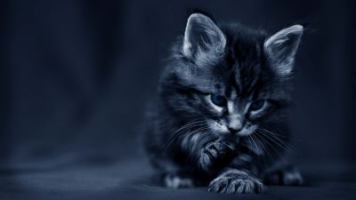

El gato doméstico es una especie de mamífero carnívoro de la familia Felidae. Son depredadores por naturaleza, con hábitos nocturnos de cacería, siendo sus posibles presas multiples especies de aves, reptiles, anfibios, peces e invertebrados. Posee un pelaje suave y lanoso con una apariencia brillante, mantenida con una constante limpieza con la lengua. Su cuerpo es flexible, ligero, musculoso y compacto. Las patas delanteras tienen cinco dígitos y las traseras cuatro. Las garras son retráctiles, largas, afiladas, muy curvadas y comprimidas lateralmente. Poseen cojinetes desnudos y patas peludas para su avance sigiloso como depredadores. La cabeza es redondeada, corta y con orejas redondeadas. Las pupilas de los ojos se contraen verticalmente, poseen además un párpado secundario o membrana nictitante para proteger el ojo.
